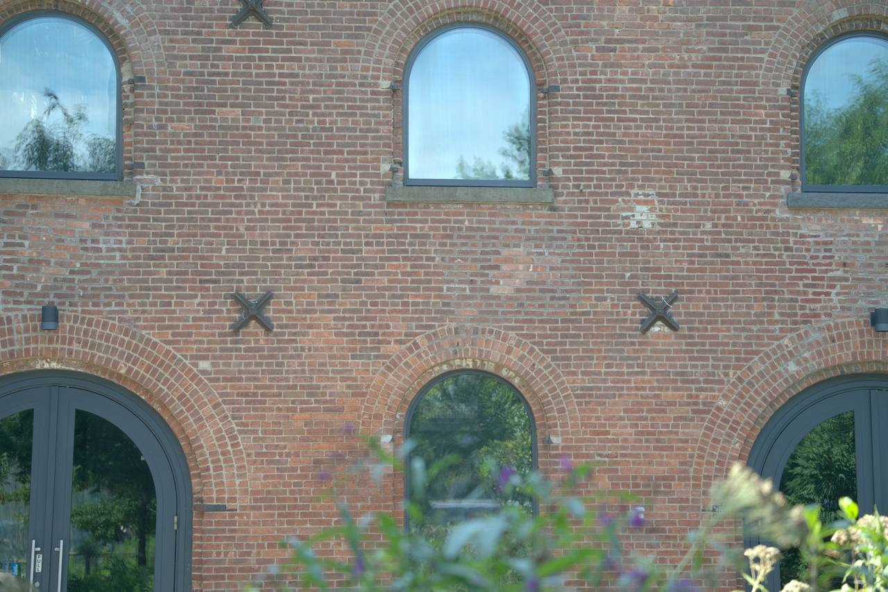
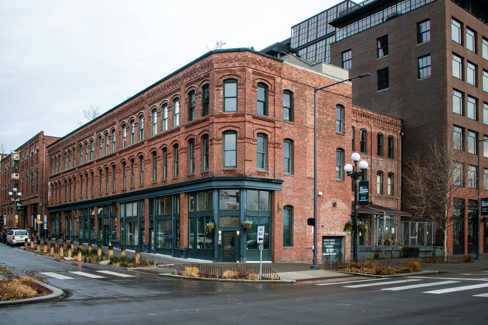
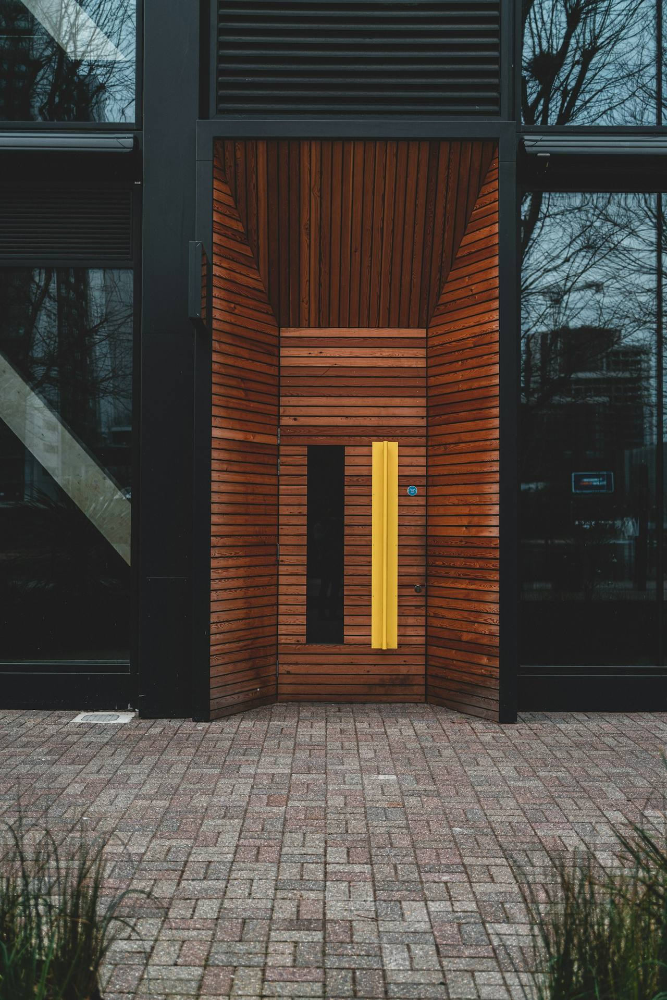
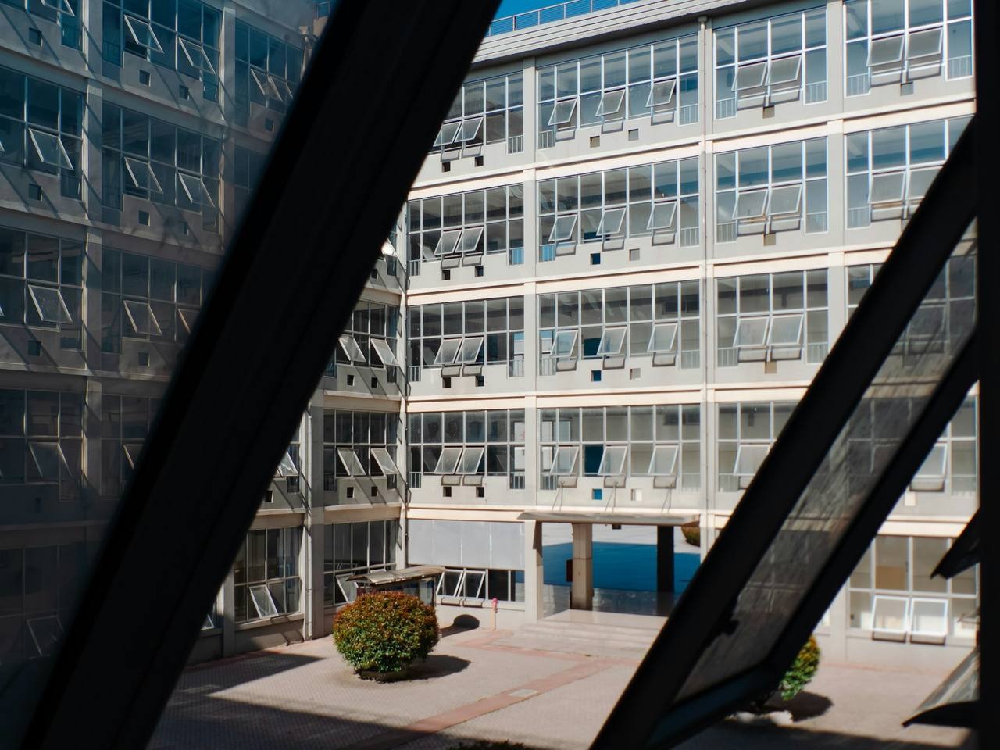
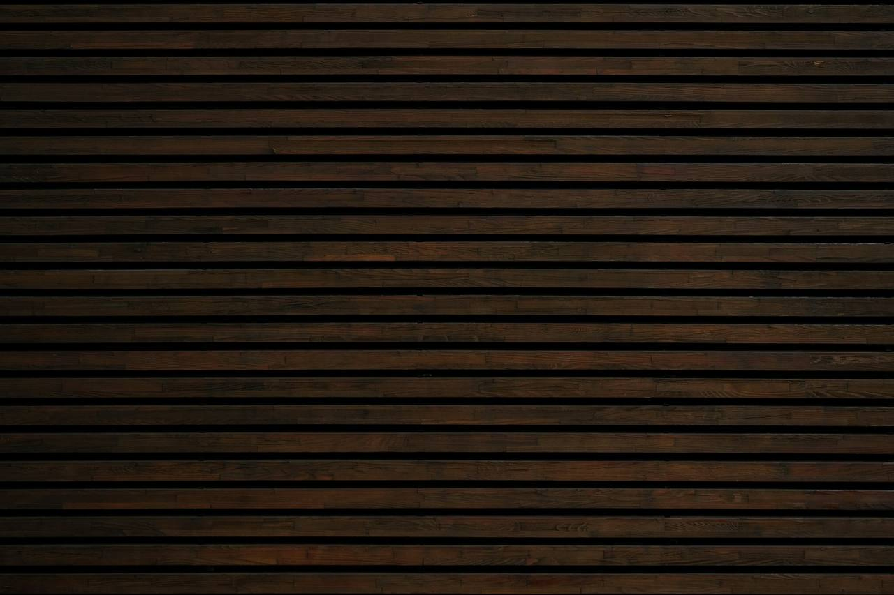
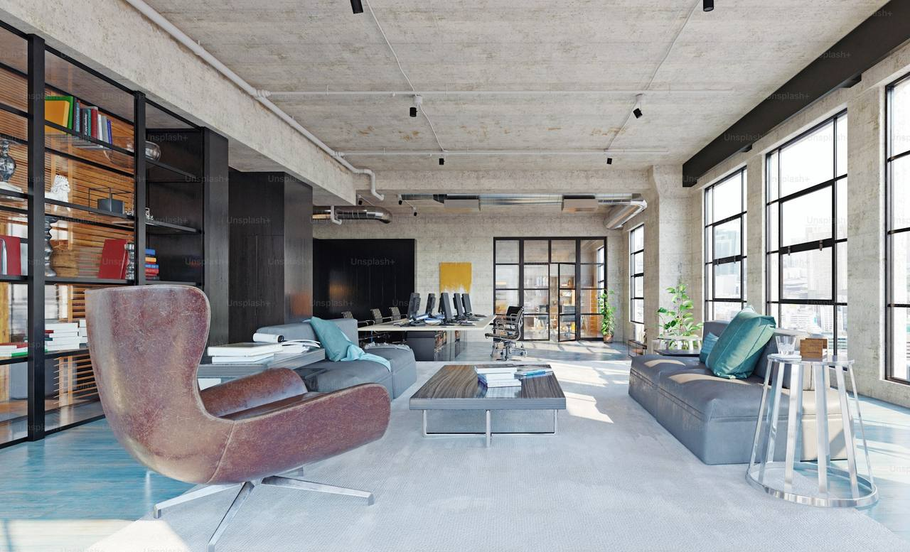
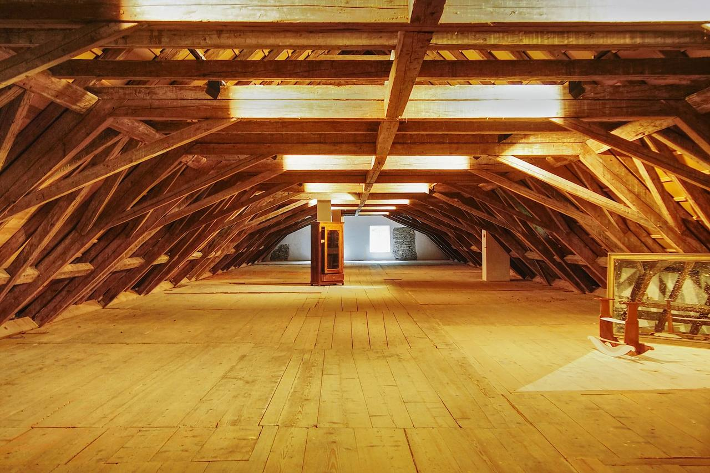
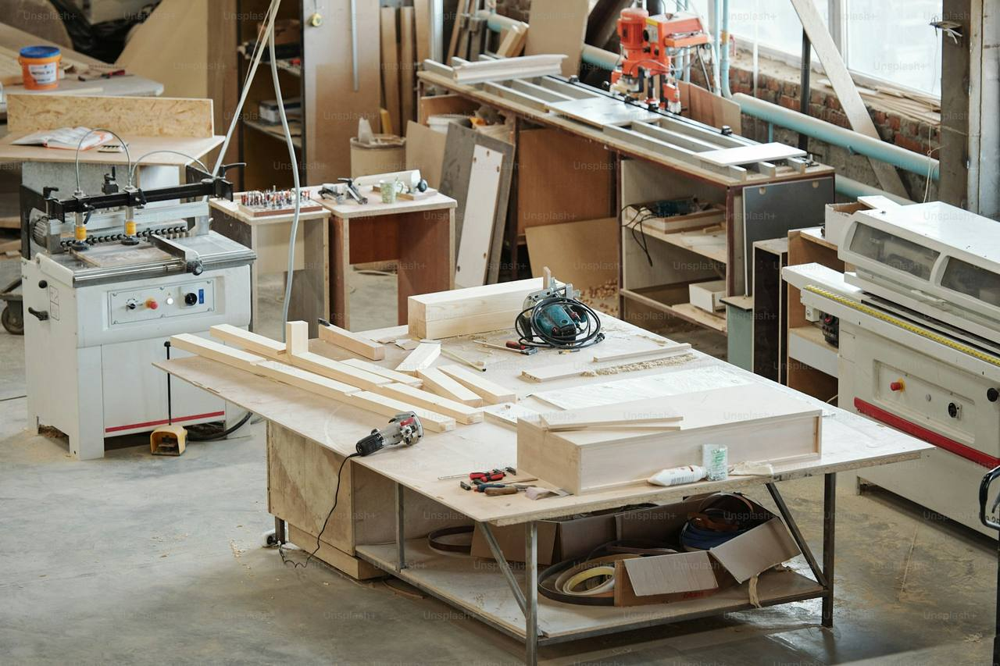

Courtyard Office
A 1920s brick warehouse re-centred on a planted courtyard; work turned toward green rather than glass.
Design narrative
The brick was the best thing on the site, so we let it lead.
A century of fit-outs had buried a good warehouse. The conversion strips the shell back to its structure, lime mortar, steel trusses and the honest scars of a hundred tenants, then inserts the new working floor as furniture rather than architecture, so the old walls keep their dignity.
Where the shell was darkest, new openings bring their own light, screened in slatted timber that throws striped afternoons across the stair. The plan turns its back on the street's parked edge and re-centres the building on a fern courtyard, open to the sky, where the lunch hour regathers the whole floor.
Nothing was added the site did not argue for: timber from the demolished mezzanine returns as meeting-room lining, rainwater feeds the courtyard's green wall, and the studio of the practice itself now occupies the top floor, clocking off through the ferns.
Material palette
Drawn from the siteThe workplace in eight views
Select any image to enlarge





